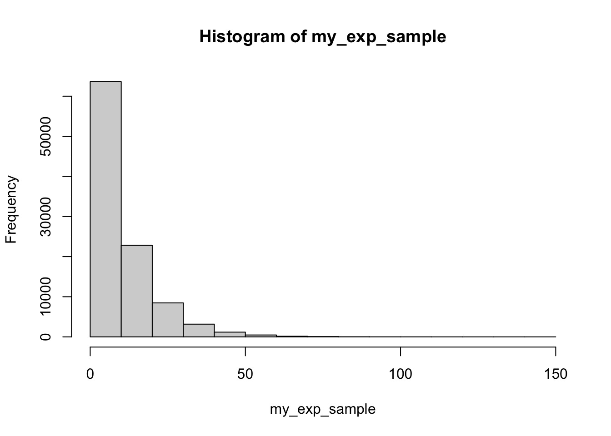
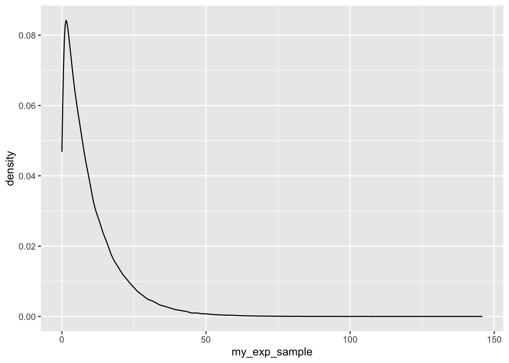
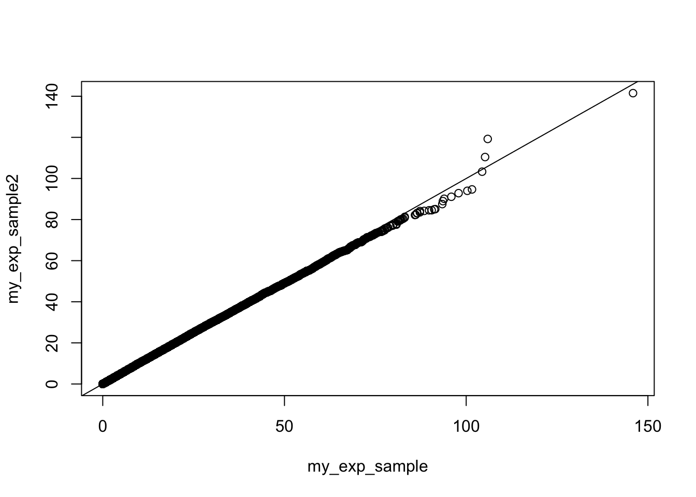

add_two_numbers <- function(number1, number2){
return(number1 + number2)
}
add_two_numbers(number1 = 2, number2 = 9)[1] 11# We can call function without argument names but it is not good practice e.g.
add_two_numbers(2, 9)[1] 11Premise for Inverse CDF method: When you want random samples from a distribution.
Here we use examples from distributions that are easy to sample from so we can compare our results with existing functions. In reality this method would be used for uncommon distributions.
First, let’s recall/introduce how we can make our own functions in in R.
Toy example:
add_two_numbers <- function(number1, number2){
return(number1 + number2)
}
add_two_numbers(number1 = 2, number2 = 9)[1] 11# We can call function without argument names but it is not good practice e.g.
add_two_numbers(2, 9)[1] 11Before we start generating random numbers, let’s set the seed to make our experiments reproducible
set.seed(345454)
x <- runif(7)
x[1] 0.8145726 0.5996877 0.7108946 0.9022302 0.2994339 0.3961138 0.6080035qexp(x, rate=0.2)[1] 8.425460 4.577551 6.204820 11.625700 1.779333 2.521848 4.682512What is the inverse CDF of an exponential distribution? Uh oh. How can we calculate this? R has functions that compute quantiles, but quantiles return the same value as inverse cdfs.
For example, if \(X \sim Exp(0.1)\), then number \(c\) such that \(Pr(X < c) = 0.6\) is \(F^{-1}(0.6)\) and can be obtained by the following R code
qexp(0.55, rate = 0.1)[1] 7.985077## or we can code it up ourselves using our lecture notes
exp_cdf <- function(x, rate=1){return(-(1/rate)*log(1-x))}
exp_cdf(0.55, rate =0.1)[1] 7.985077Equipped with this observation, let’s compute
rexp_isi_buds <- function(num_draws, exp_rate = 1){
runif_draws <- runif(num_draws) # Random draws from uniform distirbution
return(qexp(runif_draws, rate = exp_rate)) # Plug draws into cdf
}
my_exp_sample <- rexp_isi_buds(100000, exp_rate = 0.1)We can plot our observations to visually asses that we did it correctly. Note the difference in default bin sizes for the two plotting methods.
# base R plot for reference
hist(my_exp_sample)
# ggplot
library(tidyverse)── Attaching core tidyverse packages ──────────────────────── tidyverse 2.0.0 ──
✔ dplyr 1.1.4 ✔ readr 2.1.5
✔ forcats 1.0.0 ✔ stringr 1.5.1
✔ ggplot2 3.5.1 ✔ tibble 3.2.1
✔ lubridate 1.9.3 ✔ tidyr 1.3.1
✔ purrr 1.0.2
── Conflicts ────────────────────────────────────────── tidyverse_conflicts() ──
✖ dplyr::filter() masks stats::filter()
✖ dplyr::lag() masks stats::lag()
ℹ Use the conflicted package (<http://conflicted.r-lib.org/>) to force all conflicts to become errors
data.frame("my_exp_sample" = my_exp_sample) %>% # Need data frame for ggplot()
ggplot(aes(x = my_exp_sample)) +
geom_density() # Try changing the number of bins by setting bins = 10
Let’s compare our simulations with simulations produced by the R function rexp()
my_exp_sample2 <- rexp(100000, 0.1)
qqplot(my_exp_sample, my_exp_sample2)
abline(0,1)
We can also compare empirical and theoretical means and standard deviations
# Parentheses tell R to print the value being stored
(emp_exp_mean <- mean(my_exp_sample)) [1] 9.991607(theor_exp_mean <- 1/0.1)[1] 10(emp_exp_sd <- sd(my_exp_sample))[1] 10.07313(theor_exp_sd <- sqrt(1/0.1^2))[1] 10(emp_exp_var <- var(my_exp_sample))[1] 101.468(theor_exp_var <- 1/0.1^2)[1] 100Write a function to generate realizations of a normal random variable with a user specified mean and variance. Compare results of your simulations and simulation produced using rnorm().
rbernoulli <- function(success_prob){
return_value <- 0
if (runif(1) < success_prob){
return_value <- 1 # else statement is not necessary, because we set return_value to 0 from the start
}
return(return_value)
}Let’s test our function
num_sim <- 100000
my_coins <- numeric(num_sim)
my_prob <- 0.24
for (i in 1:num_sim){
my_coins[i] <- rbernoulli(my_prob)
}
head(my_coins)[1] 0 0 0 0 0 0mean(my_coins)[1] 0.23979Modify the rbernoulli() function so it has 2 arguments: the number of realizations to draw and success probability
Write a function to simulate from a discrete random variable taking values 1, 2, 3 with probabilities p1, p2, p3, supplied by the user of the function. You could do it with a sample() function, but we don’t want you to use it.
The code below should help you test your function. Name your function rdiscr3
## sample(c(1,2,3), 10, prob = c(0.1, 0.2, 0.7), replace=TRUE)
test_vector <- numeric(num_sim)
for (i in 1:num_sim) {
test_vector[i] <- rdiscr3(0.1, 0.2, 0.7)
}
# Calculate empirical proportions
sum(ifelse(test_vector == 1, yes = 1, no = 0)) / num_sim
sum(ifelse(test_vector == 2, yes = 1, no = 0)) / num_sim
sum(ifelse(test_vector == 3, yes = 1, no = 0)) / num_sim